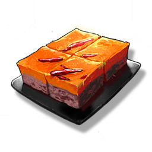

Resonators
Weapons
Items
Hot Pot Base
Resources

Ingredients that need to be obtained through food research.
A universal seasoning made from chili, spices, and fats. It can bring unexpected flavors to almost all ingredients.